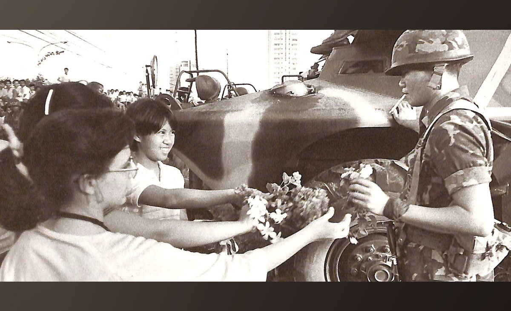

ABOUT THE REVOLUTION
The EDSA People Power Revolution took place from February 22 to 25, 1986. It was a peaceful series of demonstrations by Filipinos demanding the end of Ferdinand Marcos’s authoritarian rule and the restoration of democracy. The movement drew support from people across society, including students, workers, religious leaders, and even defectors from the military. What began as mass protests also became a moral declaration that the Filipino people would no longer accept oppression.
More than simply removing a dictator, EDSA was seen as a stand for moral and political renewal. Citizens carried flowers and wore yellow ribbons as symbols of hope and unity. The assassination of opposition leader Benigno “Ninoy” Aquino Jr. in 1983 fueled public anger, and the 1986 demonstrations made clear that the people wanted a just society grounded in democratic principles.

MY REFLECTION
Reading about EDSA at 40 reminds me that this event was not only political—it was ethical. It was about drawing a line in public life and saying that corruption, injustice, and fear would no longer define the nation. This deeper meaning motivates me to reflect not just on what happened, but why it continues to matter to Filipinos today.
As a Filipino student, I realize that democracy depends on each of us. It is not something that ends with one event. The Inquirer article emphasizes that the work of EDSA is “unfinished,” meaning that we have to stay engaged, protect our freedoms, and push for honesty and accountability in leadership.
EDSA teaches me that standing up for what is right—even in peaceful ways—can transform a nation. It reminds me that moral courage is as important as political change, and that young Filipinos today still have a role in shaping the future.
REFERENCES
- Inquirer Opinion. “EDSA at 40: Remembering the lines we drew.” Philippine Daily Inquirer, February 2026.